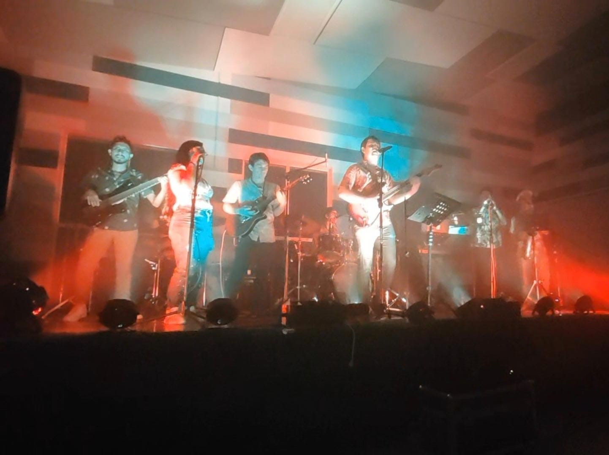

El grupo sancarleño "Vara Blanca" se presenta en la UTN de San Carlos
La noche del jueves, los estudiantes de la Universidad Técnica Nacional, sede San Carlos, vivieron un espectáculo lleno de buena vibra, talento local y música con mensaje. A las 7:00 p.m. dio inicio el concierto del reconocido grupo sancarleño "Vara Blanca", quienes ofrecieron una presentación inolvidable como parte de las actividades culturales de la Semana UTN.
La banda deleitó al público con una mezcla de covers de agrupaciones icónicas como Cultura Profética, Rawayana, Godwana y Rojo Reggae Band, fusionando sonidos del reggae con una ejecución musical de altísima calidad. Además, sorprendieron con composiciones propias que resonaron con fuerza entre los asistentes.
Entre sus temas originales interpretados durante la velada destacaron "Si alguna vez fallé" y "Vibración Serena", ambos disponibles ya en plataformas como Spotify. Su autenticidad, talento y mensaje positivo lograron conectar profundamente con los estudiantes, quienes corearon y disfrutaron cada nota del show.
La presentación de "Vara Blanca" no solo puso a vibrar el campus con sus letras y melodías, sino que también dejó claro el gran nivel artístico que existe en la Zona Norte. Fue una noche llena de energía, comunidad y arte local, que sin duda será recordada por mucho tiempo en la UTN.
Se conoce que próximamente en plataformas como Spotify estará llegando el primer EP llamado "FLUIR"
